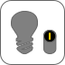

Rattus norvegicus Berkenhout, 1769
Sensory system Mouth Upper lip with large cleft 1 Incisors External nares (1 pair) 1 Whiskers 1 Eye with eyelid Pinna All above traits are better visible in the next step
Locomotor system Front leg Hind leg Tail
Excretory & reproductive system Teats (6 pairs) Urogenital opening Anus
None
1: unclear/indistinguishable 2: not visible
Digestive system Oesophagus 2 Stomach 1 Liver (4 lobes) Duodenum 1 Pancreas Jejunum Ileum Caecum Colon Rectum 1 Anus
Cardiovascular system Heart
Respiratory system Lung Diaphragm 1
Lymphatic system Thymus Spleen 1
Excretory system Kidney 2 Urinary bladder
Reproductive system Mammary glands 1 Ovary and oviduct 2 Uterus body 1 Uterine horn (1 pair) Vagina
Digestive system Oesophagus Stomach Liver (4 lobes) Duodenum Pancreas Jejunum Ileum Caecum Colon Rectum 1 Anus
Respiratory system Lung Diaphragm 2
Lymphatic system Thymus Spleen
Excretory system Kidney Urinary bladder
Reproductive system Mammary glands 1 Ovary and oviduct 1 Uterus body Uterine horn (1 pair) Vagina